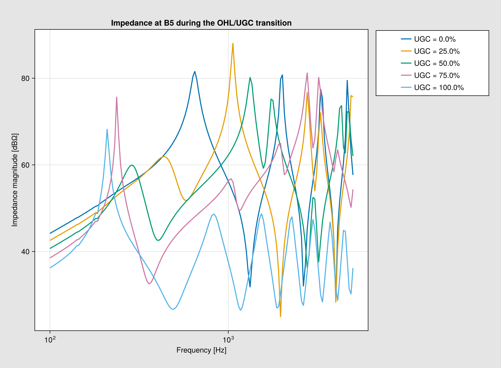

P2P HVDC parametric OHL/UGC transition
This example demonstrates the NetworkBuilder workflow for reusing a cached power-flow solution while sweeping the relative share of overhead line and underground cable in a point-to-point HVDC system.
using PowerImpedance
using CairoMakie
using PowerImpedance.NetworkBuilder: Grid, Gridspace, NetworkStateThe P and Q defined here are what is injected into the network.
transmissionVoltage = 380 / sqrt(3)
pHVDC1 = 100
qC1 = 100
qC2 = 100
rho = 100.0
L = 100e3
connections = (
(node = :B3d, element = :tl1, side = 2, terminal = 1),
(node = :B3d, element = :c1, side = 2, terminal = 1),
(node = :B3q, element = :tl1, side = 2, terminal = 2),
(node = :B3q, element = :c1, side = 2, terminal = 2),
(node = :B2d, element = :g4, side = 1, terminal = 1),
(node = :B2d, element = :tl1, side = 1, terminal = 1),
(node = :B2q, element = :g4, side = 1, terminal = 2),
(node = :B2q, element = :tl1, side = 1, terminal = 2),
(node = :B4, element = :ugc, side = 1, terminal = 1),
(node = :B4, element = :c1, side = 1, terminal = 1),
(node = :BX, element = :ugc, side = 2, terminal = 1),
(node = :BX, element = :ohl, side = 1, terminal = 1),
(node = :B5, element = :ohl, side = 2, terminal = 1),
(node = :B5, element = :c2, side = 1, terminal = 1),
(node = :B6d, element = :tl78, side = 1, terminal = 1),
(node = :B6d, element = :c2, side = 2, terminal = 1),
(node = :B6q, element = :tl78, side = 1, terminal = 2),
(node = :B6q, element = :c2, side = 2, terminal = 2),
(node = :B7d, element = :g1, side = 1, terminal = 1),
(node = :B7d, element = :tl78, side = 2, terminal = 1),
(node = :B7q, element = :g1, side = 1, terminal = 2),
(node = :B7q, element = :tl78, side = 2, terminal = 2)
)((node = :B3d, element = :tl1, side = 2, terminal = 1), (node = :B3d, element = :c1, side = 2, terminal = 1), (node = :B3q, element = :tl1, side = 2, terminal = 2), (node = :B3q, element = :c1, side = 2, terminal = 2), (node = :B2d, element = :g4, side = 1, terminal = 1), (node = :B2d, element = :tl1, side = 1, terminal = 1), (node = :B2q, element = :g4, side = 1, terminal = 2), (node = :B2q, element = :tl1, side = 1, terminal = 2), (node = :B4, element = :ugc, side = 1, terminal = 1), (node = :B4, element = :c1, side = 1, terminal = 1), (node = :BX, element = :ugc, side = 2, terminal = 1), (node = :BX, element = :ohl, side = 1, terminal = 1), (node = :B5, element = :ohl, side = 2, terminal = 1), (node = :B5, element = :c2, side = 1, terminal = 1), (node = :B6d, element = :tl78, side = 1, terminal = 1), (node = :B6d, element = :c2, side = 2, terminal = 1), (node = :B6q, element = :tl78, side = 1, terminal = 2), (node = :B6q, element = :c2, side = 2, terminal = 2), (node = :B7d, element = :g1, side = 1, terminal = 1), (node = :B7d, element = :tl78, side = 2, terminal = 1), (node = :B7q, element = :g1, side = 1, terminal = 2), (node = :B7q, element = :tl78, side = 2, terminal = 2))Bus-voltage bounds belong in the builder options used for every case.
builder_options = (;
voltageBase = transmissionVoltage,
power_flow = (;
is_bounded = (;
bus_voltage = true,
),
)
)(voltageBase = 219.3931022920578, power_flow = (is_bounded = (bus_voltage = true,),))x is the fraction of the corridor implemented as underground cable. A 100 m regularization at either endpoint avoids singular zero-length line models.
function ohl_to_ugc(x)
share = clamp(x, 1e-3, 1 - 1e-3)
ohl_model = overhead_line(
length = L * (1 - share),
conductors = Conductors(
organization = :flat,
nᵇ = 2,
nˢᵇ = 1,
Rᵈᶜ = 0.0266, rᶜ = 44.8e-3 / 2,
yᵇᶜ = 18.0, Δyᵇᶜ = 0.0, Δxᵇᶜ = 7.3, Δ̃xᵇᶜ = 0.0,
dˢᵇ = 0.0,
dˢᵃᵍ = 6.0
),
groundwires = Groundwires(
nᵍ = 2,
Rᵍᵈᶜ = 0.92, rᵍ = 0.0062,
Δxᵍ = 7.3, Δyᵍ = 7.0, dᵍˢᵃᵍ = 6.0
), earth_parameters = (1, 1, rho),
transformation = true
)
ugc_model = cable(
length = L * share,
positions = [(-0.5, 1), (0.5, 1)],
C1 = Conductor(rₒ = 0.02622, ρ = 2.354e-8, μᵣ = 1.035),
I1 = Insulator(rᵢ = 0.02622, rₒ = 0.06006, ϵᵣ = 2.67, μᵣ = 1.469),
C2 = Conductor(rᵢ = 0.06006, rₒ = 0.06336, ρ = 2.14e-7, μᵣ = 1.0),
I2 = Insulator(rᵢ = 0.06336, rₒ = 0.06636, ϵᵣ = 2.3, μᵣ = 1.0),
C3 = Conductor(rᵢ = 0.06636, rₒ = 0.06651, ρ = 2.826e-8, μᵣ = 1.0),
I3 = Insulator(rᵢ = 0.06651, rₒ = 0.07256, ϵᵣ = 2.3, μᵣ = 1.0),
earth_parameters = (1, 1, rho),
transformation = true
)
return (;
g1 = ac_source(
V = transmissionVoltage,
P = pHVDC1,
P_min = -2000,
P_max = 2000,
Q_max = 1000,
Q_min = -1000,
pins = 3,
transformation = true
),
c1 = only(mmc(Grid; Vᵈᶜ = 640, vDCbase = 640, Vₘ = transmissionVoltage,
P_max = 1500, P_min = -1500, P = -pHVDC1, Q = qC1, Q_max = 500,
Q_min = -500,
occ = PI_control(Kₚ = 0.7691, Kᵢ = 522.7654),
ccc = PI_control(Kₚ = 0.1048, Kᵢ = 48.1914),
pll = PI_control(Kₚ = 0.28, Kᵢ = 12.5664),
q = PI_control(Kₚ = 0.1, Kᵢ = 31.4159),
dc = PI_control(Kₚ = 6, Kᵢ = 15), timeDelay = 200e-6, padeOrderNum = 5,
padeOrderDen = 5
)),
c2 = only(mmc(Grid; Vᵈᶜ = 640, vDCbase = 640, Vₘ = transmissionVoltage,
P_max = 1000, P_min = -1000, P = pHVDC1, Q = qC2, Q_max = 1000,
Q_min = -1000,
vACbase_LL_RMS = 333, turnsRatio = 333 / 380, Lᵣ = 0.0461, Rᵣ = 0.4103,
Lₐᵣₘ = 30e-3,
occ = PI_control(Kₚ = 0.7691, Kᵢ = 522.7654),
ccc = PI_control(Kₚ = 1 * 0.1048, Kᵢ = 1 * 48.1914),
pll = PI_control(Kₚ = 0.28, Kᵢ = 12.5664),
p = PI_control(Kₚ = 1 * 0.1, Kᵢ = 31.4159),
q = PI_control(Kₚ = 0.1, Kᵢ = 31.4159), timeDelay = 200e-6,
padeOrderNum = 5, padeOrderDen = 5
)),
ugc = ugc_model,
ohl = ohl_model,
g4 = ac_source(
V = transmissionVoltage,
P = pHVDC1,
P_min = -2000,
P_max = 2000,
Q_max = 1000,
Q_min = -1000,
pins = 3,
transformation = true
),
tl1 = overhead_line(length = 25e3,
conductors = Conductors(organization = :flat, nᵇ = 3, nˢᵇ = 1,
Rᵈᶜ = 0.063,
rᶜ = 0.015, yᵇᶜ = 30,
Δyᵇᶜ = 0, Δxᵇᶜ = 10, Δ̃xᵇᶜ = 0, dˢᵇ = 0, dˢᵃᵍ = 10),
groundwires = Groundwires(
nᵍ = 2,
Rᵍᵈᶜ = 0.92,
rᵍ = 0.0062,
Δxᵍ = 6.5,
Δyᵍ = 7.5,
dᵍˢᵃᵍ = 10
),
earth_parameters = (1, 1, 100), transformation = true),
tl78 = overhead_line(length = 90e3,
conductors = Conductors(organization = :flat, nᵇ = 3, nˢᵇ = 1,
Rᵈᶜ = 0.063,
rᶜ = 0.015, yᵇᶜ = 30,
Δyᵇᶜ = 0, Δxᵇᶜ = 10, Δ̃xᵇᶜ = 0, dˢᵇ = 0, dˢᵃᵍ = 10),
groundwires = Groundwires(
nᵍ = 2,
Rᵍᵈᶜ = 0.92,
rᵍ = 0.0062,
Δxᵍ = 6.5,
Δyᵍ = 7.5,
dᵍˢᵃᵍ = 10
),
earth_parameters = (1, 1, 100), transformation = true)
)
endohl_to_ugc (generic function with 1 method)The transition is one deterministic Gridspace axis. The axis keeps the OHL and UGC lengths paired, so the study never evaluates an impossible Cartesian product of independent corridor lengths.
function transition_network_space(x_values)
shares = Grid(collect(x_values))
return Gridspace{NetworkState}(
share -> NetworkBuilder.define(
ohl_to_ugc(share),
connections;
options=builder_options,
),
(shares,),
(:ugc_share,),
)
end
function transition_peak(response, share)
magnitude_db = 20 .* log10.(abs.(vec(response.response[1, 1, :])))
frequencies_hz = real.(response.frequencies) ./ (2π)
peak_index = argmax(magnitude_db)
return (;
ugc_share=share,
peak_magnitude_db=magnitude_db[peak_index],
peak_frequency_hz=frequencies_hz[peak_index],
)
end
function save_transition_animation(study; filename="transition_harmonic_peaks.mp4", fps=8)
panel = only(study.plot.panels)
groups = panel.group_order
CairoMakie.record(study.plot.figure, filename, eachindex(groups); framerate=fps) do frame
for (index, group) in pairs(groups)
foreach(plot -> plot.visible[] = index == frame, panel.groups[group])
end
end
foreach(group -> foreach(plot -> plot.visible[] = true, panel.groups[group]), groups)
return filename
end
function run_transition_study(;
x_values = 0.0:0.02:1.0,
frequency_range = (100.0, 5e3, 1000),
animation_filename = nothing,
animation_fps = 8,
display_plot = false
)
shares = collect(x_values)
problems = PowerImpedanceProblem(
transition_network_space(shares);
nodes=[:B5],
eliminated_elements=[:c2],
frequency_range,
)
result = compute(
ParametricProblem(problems),
Combinatorial(NodalImpedance()),
)
labels = ["UGC = $(round(100share; digits=1))%" for share in shares]
groups = [Symbol("ugc_", replace(string(round(100share; digits=1)), "." => "_"))
for share in shares]
plot = only(PowerImpedance.plot(
result;
entries=(:B5, :B5),
labels,
series_groups=groups,
title="Impedance at B5 during the OHL/UGC transition",
figure_size=(950, 700),
display_plot,
controls=false,
))
peaks = [transition_peak(response, share)
for (response, share) in zip(result.values, shares)]
study = (; result, plot, peaks)
animation_filename === nothing || save_transition_animation(
study;
filename=animation_filename,
fps=animation_fps,
)
return study
endrun_transition_study (generic function with 1 method)The documentation uses five corridor shares and a reduced frequency grid.
transition_docs = run_transition_study(; x_values=0.0:0.25:1.0, frequency_range=(100.0, 5e3, 160))
transition_docs.plot.figure
The peak table records the resonance movement seen in the plotted curves.
transition_docs.peaks5-element Vector{@NamedTuple{ugc_share::Float64, peak_magnitude_db::Float64, peak_frequency_hz::Float64}}:
(ugc_share = 0.0, peak_magnitude_db = 81.60277581473912, peak_frequency_hz = 648.7633256344882)
(ugc_share = 0.25, peak_magnitude_db = 88.10466174239298, peak_frequency_hz = 1061.190149929239)
(ugc_share = 0.5, peak_magnitude_db = 80.24156979251983, peak_frequency_hz = 1324.223600336173)
(ugc_share = 0.75, peak_magnitude_db = 81.27235060389673, peak_frequency_hz = 2770.267466604895)
(ugc_share = 1.0, peak_magnitude_db = 68.29267240961721, peak_frequency_hz = 209.1993728175229)Back to Examples